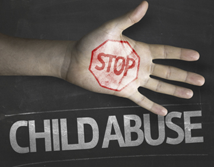

NEGLECT, ABUSE, AND FAMILY VIOLENCE
What is Child Neglect?
Child neglect, a very common type of child abuse, is a pattern of failing to provide for a child’s basic needs, whether it be adequate food, clothing, hygiene, medical care or supervision. Child neglect is not always easy to spot. Sometimes, a parent might become physically or mentally unable to care for a child, such as with a serious injury, untreated depression, or anxiety.
What is Child Abuse?
The World Health Organization (WHO) defines child abuse or maltreatment as “all forms of physical and/or emotional ill-treatment, sexual abuse, neglect or negligent treatment or commercial or other exploitation, resulting in actual or potential harm to the child’s health, survival, development or dignity in the context of relationship of responsibility, trust or power.”
What is Family Violence?
Family Violence can be defined as a pattern of behavior in any relationship that is used to gain or maintain power and control over an intimate partner. Abuse is physical, sexual, emotional, economic or psychological.
Abuse is also actions or threats that influence another person. This includes any behaviors that frighten, intimidate, terrorize, manipulate, hurt, humiliate, blame, injure or wound someone.
Look for Red Flags
- Child (or parent) appears fearful, staff observes visible bruises, marks, scars on child or parent.
- Parent does not remove sunglasses once inside CHOP.
- Parent appears to be under the influence of drugs and/or alcohol.
PENNSYLVANIA’S SAFE HAVEN LAW
What is the Safe Haven Law?
The Safe Haven Law allows parents to relinquish newborns up to 28 days old at any hospital in the state of Pennsylvania without the fear of criminal prosecution as long as the baby has not been harmed. Babies can be left with any hospital staff member.
Safe Haven is Necessary
Young girls and women who might be hiding their pregnancies or aren’t ready to be mothers are often scared, and don’t know where to turn. Out of fear or shame, some mothers abandon their baby hours after birth. Safe Haven gives parents an option that is both safe for the child and confidential.
Safe Haven is Important
Safe Haven gives parents a safe, legal, and confidential alternative to abandoning or neglecting their baby. Pennsylvania is one of 48 states that has passed a Safe Haven Law.
Your Role in Providing Safe Haven
If you are approached by someone asking you to take a newborn, ask the following questions only:
Upon taking a newborn, staff may share: “We will take good care of the baby,” if they feel the need to say something. Take the newborn to the Emergency Department. If you are not a clinical employee, approach the first registered nurse or physician and transfer the newborn to that person.
Emergency Department Procedures
After taking the newborn to the Emergency Department (ED), the ED has the following process:
1The ED attending physician will assess the newborn and assume protective custody of the newborn.
2If the parent is willing to complete a medical history questionnaire, the form is available to be printed through Standard Registry.
3The Emergency Department charge nurse will notify the County Children and Youth Services, Department of Human Services at 215- 683-6100.
4The ED charge nurse will notify the Director of Nursing on-call, Security, and Risk Management.
5The ED social worker will notify the Department of Human Services at 215-683-6100, and the Philadelphia police at 911.
6The ED Social Worker will coordinate the completion of the birth certificate for the newborn.
Report It

Mandated Reporters
People “who, in the course of their employment, occupation or practice of their profession, come into contact with children shall report or cause a report to be made.” Mandated reporters are staff that have direct patient contact (e.g. physicians, nurses, social workers, admissions and discharge planning workers).
While administrative staff are not mandated reporters, they do have the responsibility to provide “care in a safe and secure setting free from verbal or physical abuse.” (Patient and Family Bill of Rights and Responsibilities)
Intervention
You have the responsibility to contact the appropriate staff. This is what the family and child need from you to make sure that they are treated with privacy, respect and consideration for any Hospital action that may impact them. Remember, we all lose our cool sometimes. Speak in a tone that communicates respect and acknowledge that sometimes, situations like coming to the Hospital can feel overwhelming.
The responding Social Work representative, SCAN (Suspected Child Abuse and Neglect) team member or security officer will determine what support or resources the family needs. The SCAN team is a multidisciplinary group that evaluates suspected cases of child abuse and neglect. Team members include physicians, social workers, psychologists, and other specialists as needed.
If it appears very serious and someone is in immediate danger of injury, contact Security at ext 4-5500 or call 911 at the ambulatory sites.
In situations where the threat is less immediate at the Main Hospital call:
- Social Work: ext #4-2072 (9 a.m. - 5 p.m.); beeper 10048 (after hours)
- Department of Human Services Child Abuse Hotline in your state
- SCAN team: beeper
- Ambulatory settings: alert a social worker, physician or nurse
While waiting for assistance, words to use could be: “I see you are having a difficult time with your child, can I sit with you for a few minutes?” or “Is there anyone I can contact or anything I can do to help?”
Additional Help and Information
For more information on how CHOP policies concerning suspected child abuse, neglect, and family violence, review the links below.
Job Aid for Indications of Suspected Child Abuse
RESOURCES FOR CAREGIVERS SEEKING TO GET OUT OF AN ABUSIVE RELATIONSHIP
Lutheran Settlement House
1340 Frankford Ave., Phila., PA 19125
Cell: 215-360-3547
Office: 215-426-8610 x279
Pager: 79953
Philadelphia Domestic Violence Hotline